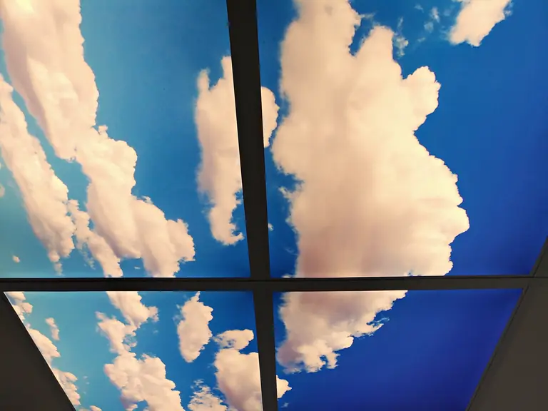
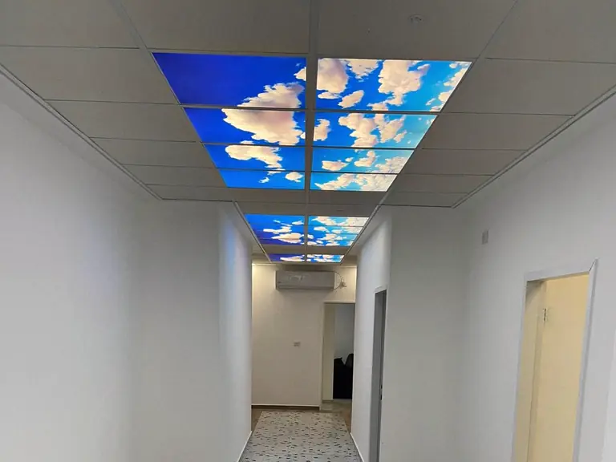
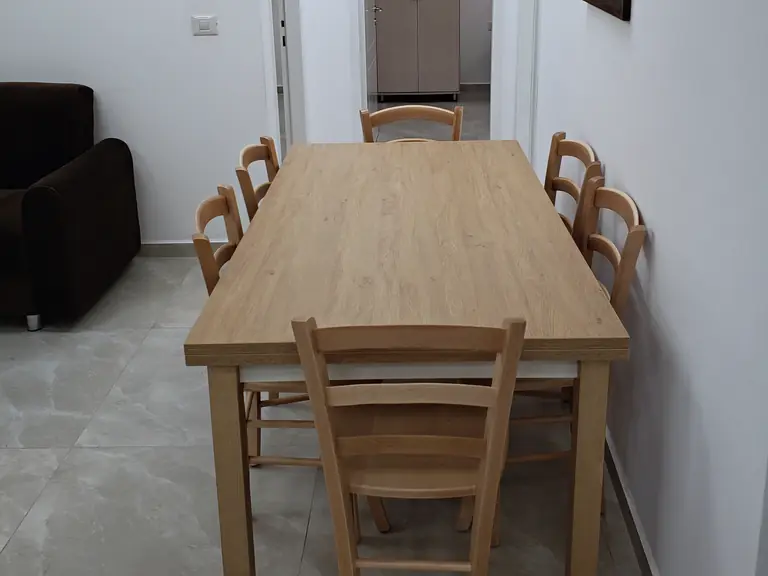

מעון ראשי — בית לחיים.המעון הראשי בנס ציונה
בית בנס ציונה לבוגרים ובוגרות עם מוגבלות שכלית התפתחותית, גם עם אבחנה כפולה או התנהגות מאתגרת. צוות קבוע, טיפול מקצועי ויום מלא בעשייה.
גרים כאן גברים ונשים עם מוגבלות שכלית התפתחותית.
הצוות קבוע, ומכיר את כולם.
אפשר לבוא לראות את המקום.
או בטלפון:אפשר גם להתקשר: 08-9403047
בית עם צוות שמכיר אותך.צוות שמכיר אותך
דירות המעון מחולקות לשתי יחידות, ולכל יחידה צוות קבוע משלה — כך כל דייר ודיירת יודעים למי לפנות, והצוות מכיר כל אחד ואחת לעומק.
המעון מחולק לשני חלקים.
לכל חלק יש צוות משלו.
הצוות מכיר כל דייר וכל דיירת.
- 2יחידות, לכל אחת צוות קבוע
- 4תפקידים בכל צוות: ניהול, עבודה סוציאלית, אם בית, ריכוז דירות
- 100+דיירים ודיירות בנווה האירוס
- 1957שנת הקמה
- למי
- בוגרים ובוגרות עם מוגבלות שכלית התפתחותית, כולל אבחנה כפולה והתנהגות מאתגרת
- איפה
- בנס ציונה
- פיקוח
- משרד הרווחה והביטחון החברתי
בנווה האירוס גרים יותר מ־100 דיירים ודיירות.
המעון נפתח בשנת 1957.
משרד הרווחה בודק שהכול בסדר.
האגף החדש.
את האגף החדש תכננו אדריכליות במיוחד בשביל הדיירים והדיירות: קו עיצובי נעים ורגוע, ותאורת „שמיים” בתקרה.
תמונות מהאגף החדש.

פינת האוכל המשותפת. 
תקרת „שמיים” — לוחות תאורה עם עננים. 
חדר מגורים לשניים. 
הסלון המשותף. 
מסדרון האגף החדש, עם תאורת „שמיים”. 
פינת אוכל וסלון באגף החדש.


כל מה שצריך, קרוב לבית.מה יש במעון?
חדר שקט ונעים להירגע.
מרפאה ומרפאת שיניים.
חוגים ופעילויות.
חדר סנוזלן
סביבה רב־חושית מבוקרת, להרפיה ולוויסות רגשי. הוקם בסיוע המוסד לביטוח לאומי.
מרפאה ומרפאת שיניים
צוות רפואי במקום, ומרפאת שיניים מתקדמת.
חדרי טיפול
חדשים, מרווחים ומזמינים.
תעסוקה ופנאי
סדנאות, חוגים ופעילויות לאורך השבוע — בתוך המעון ומחוצה לו.
מועדון
מקום מפגש לרווחת הדיירים והדיירות.
קידום אישי
תוכנית אישית לכל דייר ודיירת, לפי הרצונות והיכולות שלהם — כולל אפשרות לעבור לדיור בקהילה.
הצוות הרפואי והמטפל נגישים בכל שעה ולכל שאלה […]. ישנה הקשבה מלאה והתייחסות כנה ואמיתית לצרכים.
אמא של דייר כתבה לנו מכתב.
היא כתבה שהצוות עונה על כל שאלה.
היא כתבה שהצוות מקשיב באמת.
בשפה פשוטה
- המעון הראשי נמצא בנס ציונה.
- גרים בו גברים ונשים עם מוגבלות שכלית התפתחותית.
- הצוות קבוע, ומכיר את כולם.
- יש חדר נעים להירגע, מרפאה וחוגים.
- אפשר לבוא לבקר.
החלקים החשובים בדף כתובים עכשיו בשפה פשוטה.
בואו לראות בעיניים.רוצים לבוא לבקר?
השאירו פרטים ונחזור אליכם לתיאום מפגש היכרות.
אפשר להתקשר אלינו.
אפשר גם למלא את הטופס.
בקשה לביקור
תודה! הבקשה התקבלה.
נחזור אליכם בהקדם לתיאום הביקור. (באב־הטיפוס הטופס אינו נשלח.)